I was hired as the founding designer, and got to build the entire suite of Drizly products from the ground up. Starting with a quick but functional consumer facing web experience, we secured an angel round raise. For the next 3 years I got to design and ship a ton of amazing products and features. I grew the team to 6 designers and oversaw the design for 3 years and into a Series C raise. Drizly was purchased by Uber in 2021 for $1 Billion.
Evolution of the Website
The first website was designed in about 2 weeks. We had not landed on a brand redesign yet, and we were still using clip art. The website experience changed rapidly and often, as we constantly experimented with CTA's, monitored site traffic analytics, and weighed the benefits of address capture vs. shopping as the initial user facing experience.
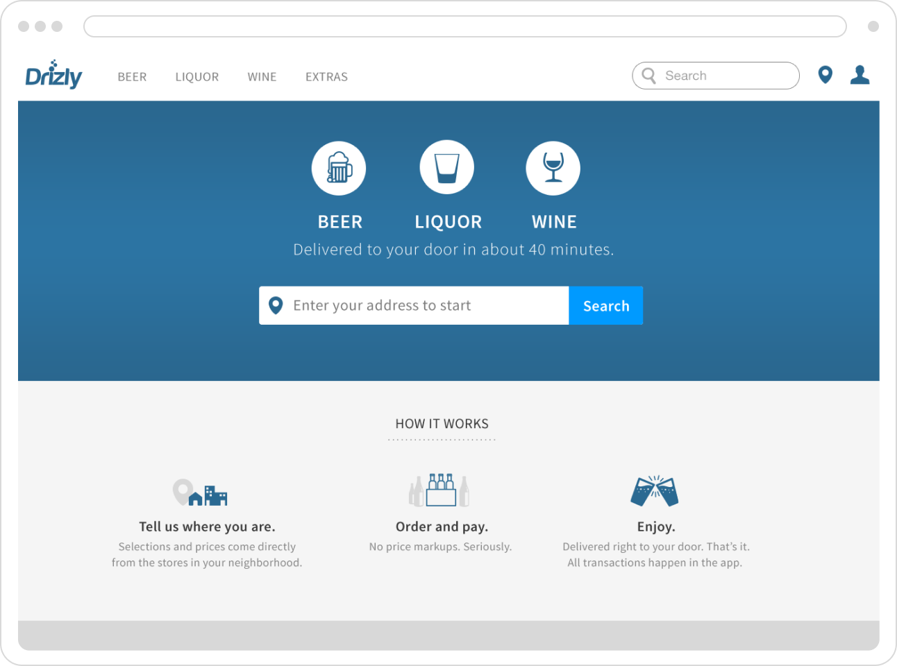
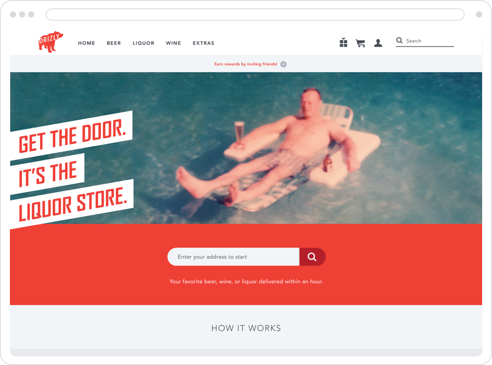
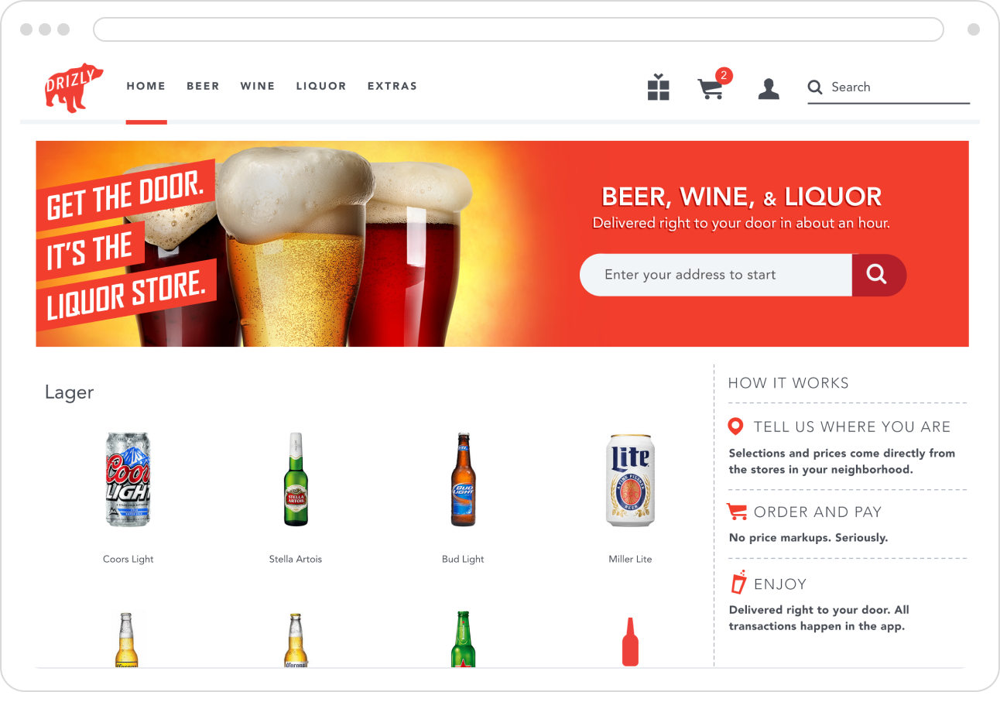
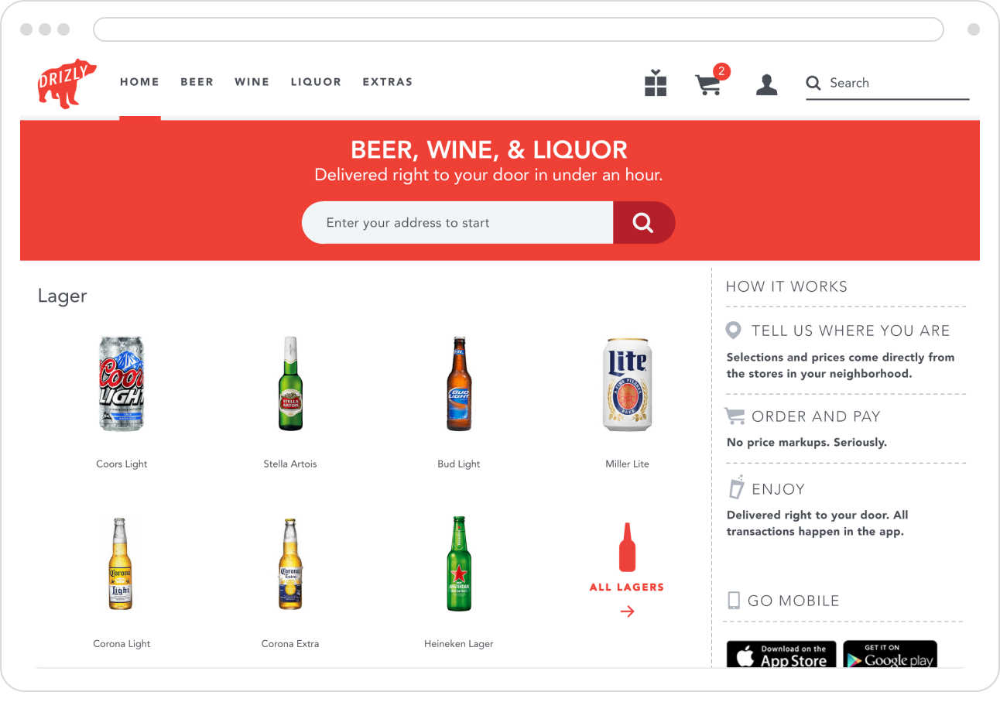
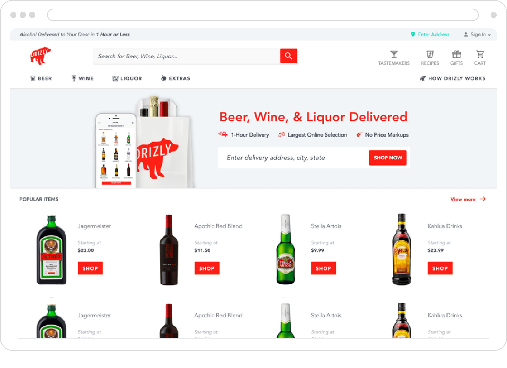
Native iOS & Android Apps
After getting the website live and functional, we hired an iOS engineer. Together, we designed and shipped Drizly's native iPhone app in about 9 months. A month after the app went live, we secured a Series A raise that would drive the team and product growth for the next year.
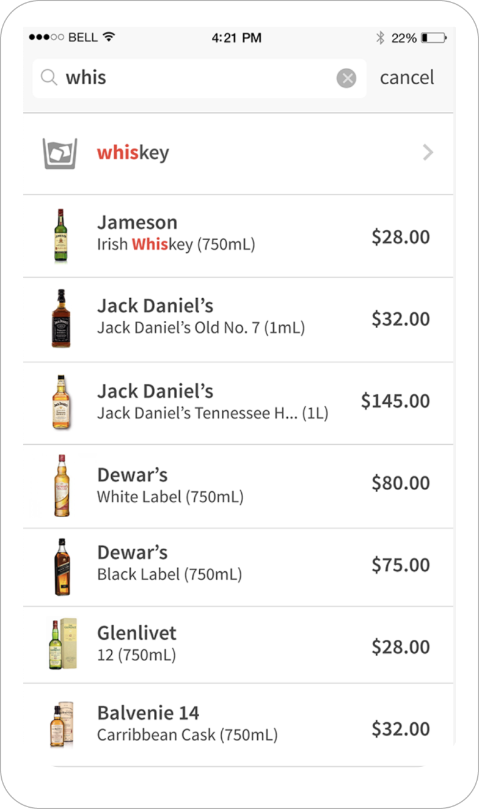
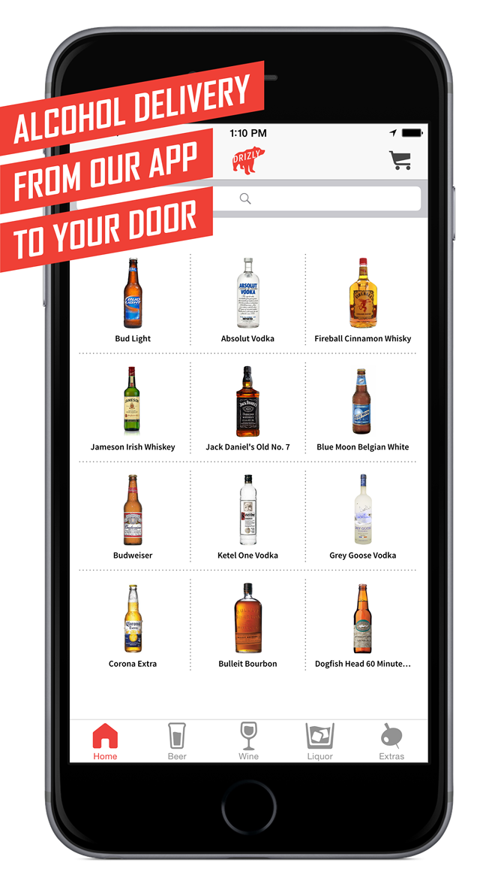
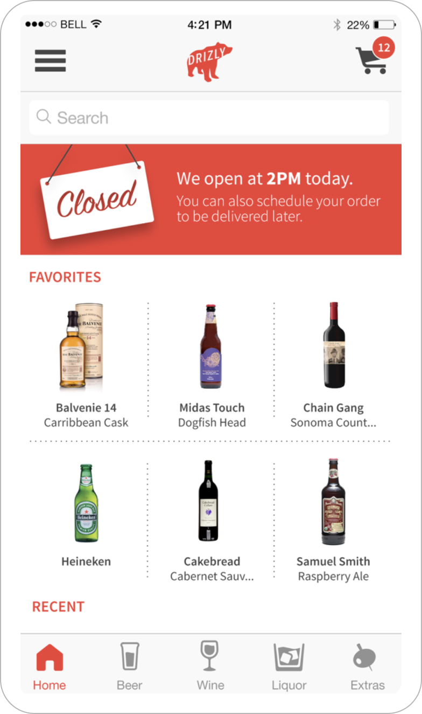
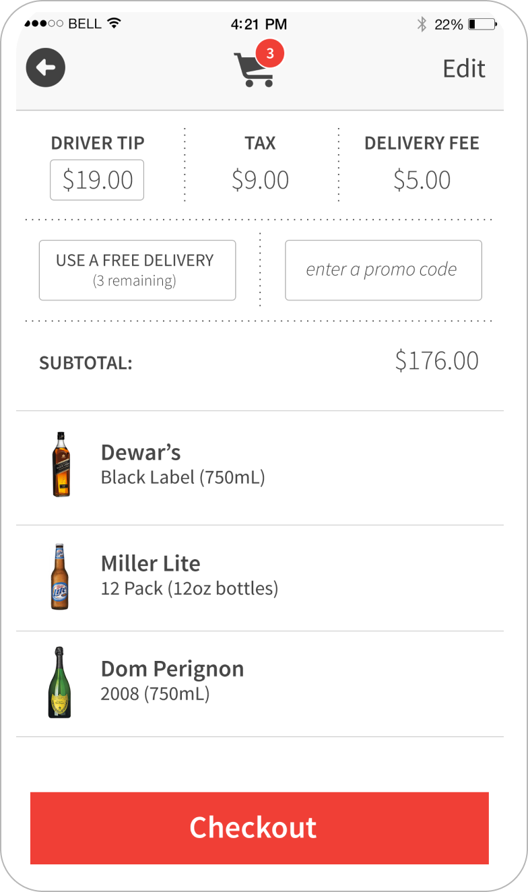
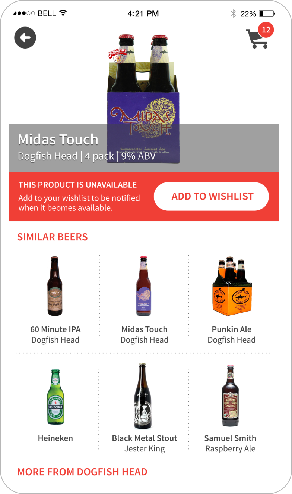
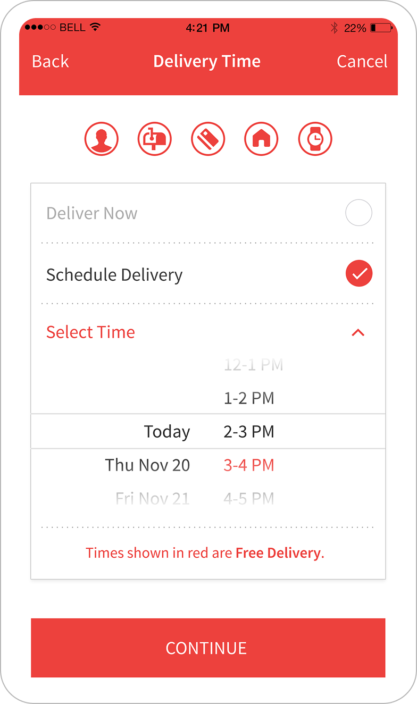
SEO / CMS / Recipe Pages / Gifting Experiences
We built a CMS backend for SEO & Brands. Brands were able to pay to own their product pages and add personalized content (youtube videos, social media feeds, ad campaign materials. I also designed recipe pages to go after long tail search terms like "margarita" that would drive users into a convertible Drizly page that would allow the user to add all necessary ingredients to their cart for purchase.
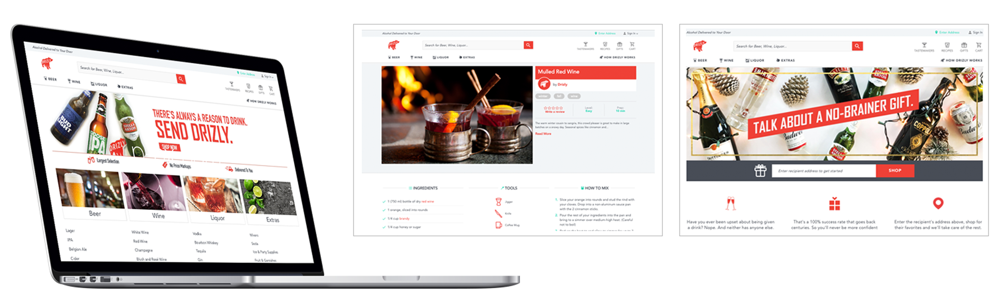
Advertising / Brand Experience for iOS & Android
I worked with the sales team to create a cohesive brand advertising experience with the native apps. Brands were able to bid on categories, allowing them to own a branded banner at the top and have their products listed first. Brands could also bid on placement for their products to show up first in search and on the home pages.
As the product offerings expanded, we needed to design a proper faceted search experience allowing users to filter by things like stores, delivery availability, price, and alcohol.
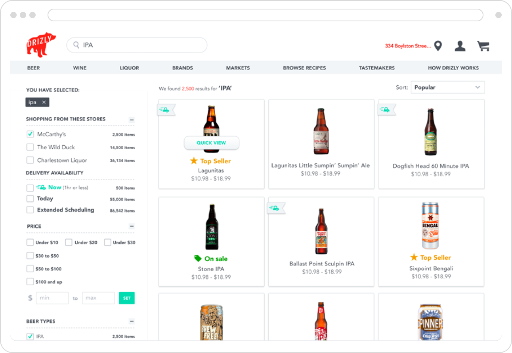
Store Portal Dashboard & Analytics Dashboard
I designed and prototyped a variety of store facing dashboards and analytics experiences to pilot as a SaaS product to liquor stores. They were able to see, on both a national and local level which products were moving the fastest, which were the highest grossing, and which products in their offering could be replaced with more popular options for an instantly higher ROI.
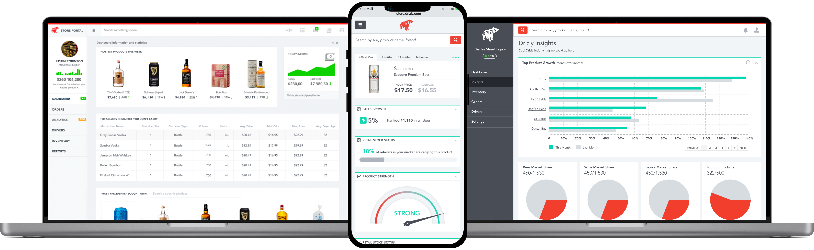
More for brands. Product display page ownership.
I worked with the sales and marketing teams to design a CMS driven brand page that we could market to the brand owners. This was powerful because for the first time, alcohol brands were able to drive their social media campaigns to purchase. They were able to integrate their social media feeds, ad campaigns, recipes, and cross-promotional product upsells straight from their product pages. We also launched reviews and ratings to further our SEO game.